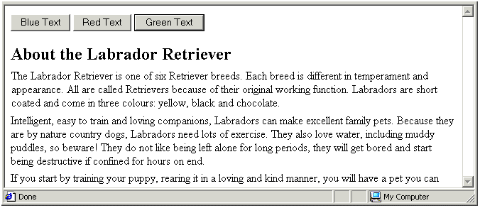
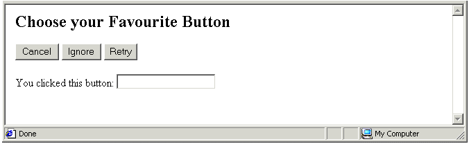
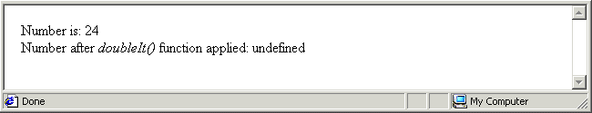
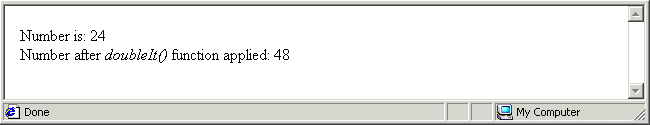

Objectives
In this Tutorial you will learn how to:
- Pass one or more parameters to a function
- Return a value from a function
- Call functions with keyboard-based event handlers
In this Tutorial you will meet the following terms:
- Function parameter
- Literal
Exercise Files
In this Tutorial you will work with the following HTML files:
Functions that need parameters
Sometimes you will want to function to perform a task that requires some 'raw material'. Providing information to a function that is then manipulated in some way is known in JavaScript terms as passing a parameter to a function. A function may be designed to accept several parameters.
Function Parameter
Information that is passed to a function for the function to work on. The function may use the information to perform a calculation, or to decide which of a number of possible instructions to perform.
Back in Exercise 5.12 of Chapter 4 you worked with a web page that contained three buttons and three event handlers that triggered three separate functions.
The simplified HTML button code and the event handlers are as follows.
<button onclick ="setBackgroundBlue()">Blue Background</button> <button onclick ="setBackgroundRed()">Red Background</button> <button onclick ="setBackgroundGreen()">Red Background </button>
The three functions that perform the required change to the web page's background colour are as follows.
function setBackgroundRed() {
document.bgColor='#FF0000';
}
function setBackgroundGreen() {
document.bgColor='#00FF00';
}
function setBackgroundBlue() {
document.bgColor='#0000FF';
}
That's a lot of scripting. Is there a shorter, alternative way to achieve the same result? Yes. Start by taking the particular colours out of the functions and placing them inside the event handlers. Also rename the function called by the event handlers as shown below.
<button onclick ="setBackground('#FF0000')">Blue Background</button>
<button onclick ="setBackground('#FF0000')">Red Background</button>
<button onclick ="setBackground('#FF0000')">Red Background </button>
The above three event handlers don't just call the function;they also give the function the information it needs to do its job.
With the colours in the individual event handlers, you can rewrite the three functions into a single function that accepts a parameter of colour from the event handlers.
function setBackground(colour) {
document.bgColor=colour;
}
Whenever the web page visitor clicks a button the colour within parenthesis is passed to the function as a parameter. The parameter name is typed inside the function's parenthesis. This information is then used by the function to set the web page background colour.
In Exercise 6.1 you will pass hex Colour codes as parameters from three different event handlers to a single function.
Exercise 6.1: Passing a Colour Code Parameter to a Function
Open the following file in your VS Code and web browser:
Examine the file in your VS Code. In the head section you can see a function that accepts a parameter named 'textcolour'. In the body section are three buttons.

There is no connection between the buttons in the <body>and the function in the <head> Clicking on these buttons does not trigger any action.
Insert the following event handlers and colour codes within the three event handlers.
<button onclick=" setTextColour('#000080')">Blue Text</button>
#E6E6E6 ;#E6E6E6<button onclick="setTextColour('#CC3300')">Red Text</button>
<button onclick=" setTextColour('#008000')">Green Text</button>
Save your web page and reload your web browser.
Click the buttons to verify that event handlers successfully pass to the text colour codes to the function. You can close the file when finished.
In Exercise 6.2 you will pass a text strings as parameters from three different event handlers to a single function.
Exercise 6.2: Passing a String Parameter to a Function
Open the following file in your VS Code and web browser:
Examine the file in your VS Code. In the head section you can see a function that accepts a parameter named 'textmsg'. In the body section are three buttons.

There is no connection between the buttons in the <body>and the function in the <head> Clicking on these buttons does not trigger any action.
Insert the following event handlers and colour codes within the three event handlers.
<button onclick="showMessage('Cancel')">Cancel </button>
<button onclick="showMessage('Ignore')">Ignore</button>
<button onclick="showMessage('Retry')">Retry</button>
Save your web page and reload your web browser.
Click the three buttons in turn. The buttons now work because they are connected, through the onclick event handler, to the function in the document head. Also each button passes a string to the function. You can close the file when finished.
About Literals
You have learnt that a variable can hold a value that changes. A literal is the opposite of a variable. It's a string or number that does not change, but retains a constant value. Consider the following JavaScript statement that contains both a literal ('Your Name') and a variable ('user_name').
document.write("Your Name: "+user_name);
In Exercises 6.1 and 6.2 the details passed from the event handlers to the functions are literals. In Exercise 6.1 the literals were hex colour codes such as '#CC3300'. In Exercise 6.2 the literals were text items such as 'Cancel'. In both cases the literals were strings as they were enclosed within quotes.
Literal
A data value that is placed directly in a script. It can be a string within single or double quotes, or a number without quotes.
The passing of parameters: a review
Let's sum up what you have covered about functions and parameter-passing:
- Event handlers: A literal can be stored within the parenthesis of an event handler. In the example below the literal is the string 'Say Hello World'.
onclick=" saySomething('Hello World')" - Parameter-passing: When an event handler is triggered by a user action such as clicking, its literal value can be passed to the function specified in the event handler. In the example above the literal value of 'Hello World' is passed to the function named 'saySomething'.
- Function variable: A variable can be declared within the parenthesis of a function. In the example below the function 'saySomething' contains the variable 'message'.
function saySomething(message)
- When the function is triggered by an event handler containing a literal value, that literal is assigned as the value of that variable. The variable can then be manipulated within the function.
function saySomething(message) { window.alert(message); }
Passing mltiple parameters
You can pass multiple literals as parameters to a function, and a function's parenthesis can contain multiple variables. The only rule is this: The number of variables in the parenthesis of the function must match the number of literals in the event handler that calls the function.
Exercise 6.3 provides an example of multiple parameter-passing to an arithmetic function.
Exercise 6.3: Passing Multiple Parameters to a Function
Open the following file in your VS Code and web browser:
Examine the file in your VS Code. In the head section you can see a function that calculates the average value of three numbers. In the body section is single button with an event handler that contains three literals. The literals are separated by commas.
<button onclick="findAverage(12,36,48)">Click Here</button>
Click the button and you web browser will display and error message. That is because there are no variables within the parenthesis of the called function to accept the three literals passed to it by the button's event handler.
Insert three variables inside the parenthesis of the function as shown below. The variable names are separated by commas.
function findAverage( firstNo,secondNo,thirdNo)
Save your web page and reload your web browser.
Click the button to view a dialog box containing the average calculated by the function based on the three parameters that the event handler passed to it.
Functions that return values
You have seen how an event handler can pass a parameter to a function. The opposite is also true: a function can pass a value back to the place from which the function was called. This action is described as the function returning a value.
Until now you have only called functions through event handlers such as onclick and onload. You can also call a function directly from a statement. The following two statements call two different functions. The first function call does not pass a parameter. The second function call passes the parameter named 'temperature'.
myvar = doSomething(); temperature = updateNow(temperature );
The statement that calls the function may be in another function in the head of the HTML document, or it may be located somewhere of the document body.
Consider the following script in which a number is assigned to a variable and the variable's value to written to the browser window. The function named doubleIt() is then called and applied to the numeric variable, and its amended value is written to the browser window.
var mynum = 24;
document.write("number is: "+mynum+"<br>");
mynum = doubleIt(mynum );
document.write("Number aftef <i>doubleIt()<\/i>function applied: "+mynum);
The code for the doubleIt() function is as follows.
function doubleIt(mynum) {
mynum = mynum* 2;
}
What happens when the doubleIt() function and the script that calls it are placed within a web page? The result is as shown below.

The cause of the error is as follows: aftef the doubleIt() performs its instruction, there is no mechanism for the function to send its answer back to the script from which the function was called. You can correct this problem by insert a return command that sends the 'mynum' variable back to the calling script as shown below.
function doubleIt(mynum) {
mynum = mynum* 2;
return mynum;
}
When you reload the web browser the output now looks like that shown below. As you can see, the result of the function has been successfully returned to the scripting the document body.

Another feature of the return command is that it halts any further execution of the function. That is, any instructions located after the return command in the function are ignored. In the example below, only the firstwindow.alert() instruction is actually performed. JavaScript ignores the three otherwindow.alert() instructions because they occur after a return command.
function hello() {
window.alert("Before return statement");
return;
window.alert("After return statement");
window.alert("Also after return statement");
window.alert("And another one after the return statement");
}
Exercise 6.4 provides an example of function returning a value back to the script that called it.
Exercise 6.4: Returning a Value from a Function
Open the following file in your VS Code and web browser:
Examine the file in your VS Code. In the head section you can see a function that converts a temperature in Fahrenheit to its value in Celsius.
function toCelsius(mytemp) {
mytemp = ((5/9) * mytemp ) - 32;
}
Within the <SCRIPT> tag in the document body insert statements that assign a value for conversion, that call the conversion function, and that write the 'before' and 'after' temperature values to the browser window.
var mytemp = 18;
document.write("Temperature in Fahrenheit is: "+mytemp+"°<br>");
mytemp = toCelsius(mytemp );
document.write("Temperature in Celsius" "+mytemp+"°");
Save your web page and reload your web browser.
The result should look as shown. The error arises from the fact that, although the function performs the temperature conversion correctly, it does not return the result back to the script that called it.

Insert a return command in the function as shown below.
mytemp = ((5/9) * mytemp ) - 32; return mytemp; }
Resave your file, reload your web browser, and verify that the converted temperature value is returned correctly and displayed in the browser window. You can close the file when finished.

Calling functions with keyboard events
Mouse movements and clicks are not the only user actions that can call a function. Web page visitors can also call functions with key presses. The event handler is onkeypress, following by the ASCII code for the relevant key. There are two benefits from offering onkeypress event handlers on your web pages:
- Speed of use: It is generally faster for a user to perform an action by pressing a key than to reach for and move the mouse.
- Accessibility: Keyboard-based actions make your web pages more accessible to users with disabilities.
In Exercise 6.5 you will create a form that displays the code of whichever keys are pressed by the web page visitor.
Exercise 6.5: Displaying Keypress Events
Open the following file in your VS Code and web browser:
In the document body is a form named 'form1' that contains a single-line text box called 'text1'. Attached to the text box is an onkeypress event handler that calls the userPress() function.
Within the <script> tag in the document head insert the following statements.
function userPress() {
userkey=window.event.keyCode;
document.forms.form1.text1.value="You pressed the "+userkey+"key"
}
Save your web page and reload your web browser.
Press a number of keys in turn. In the form's text box you can see the letter, number or symbol that you typed, along with the corresponding ASCII keycode. The result should look as shown. You can close the file when finished.

Chapter Summary
Sometimes you will want to function to perform a task that requires some 'raw material'. Providing information to a function that is then manipulated in some way is known in JavaScript terms as passing a parameter to a function. A function may be designed to accept several parameters. The function may use the information to perform a calculation, of to decide which of a number of possible instructions to perform.
In the example below three onclick event handlers pass hex colour codes to the function named ' setBackground()'. These event handlers don't just call the function; they also give the function the information it needs to do its job.
Whenever the web page visitor clicks a button the colour within parenthesis is passed to the function as a parameter. The parameter name is typed inside the function's parenthesis. This information can then be used by the function to set the web page background colour.
function setBackground(colour) {
document.bgColor=colour;
}
A literal is the opposite of a variable. It's an item of data that does not change, but retains a constant value, and is placed directly in a script. In the above function the literals are hex colour codes. A literal can be a string within single or double quotes, or a number without quotes.
You can pass multiple literals as parameters to a function, and a function's parenthesis can contain multiple variables. The only rule is this: The number of variables in the parenthesis of the function must match the number of literals in the event handler that calls the function.
Event handlers are not the only way to call a function. You can also call a function directly from a statement. the following two statements call two different functions. The first function call does not pass a parameter. The second function call passes the parameter named 'temperature'.
myvar = doSomething(); temperature = updateNow(temperature );
The statement that calls the function may be in another function in the head of the HTML document, or it may be located somewhere of the document body.
When a statement calls a function directly, there must be a mechanism for the function to send its result back to the location from which the function was called. JavaScript offers a return command for this purpose. An example is shown below.
function doubleIt(mynum) {
mynum = mynum* 2;
return mynum;
}
Another feature of the return command is that it halts any further execution of the function. That is, any instructions located after the return command in the function are ignored.
Mouse movements and clicks are not the only user actions that can call a function. Web page visitors can also call functions with key presses. The event handler is onkeypress, following by the ASCII code for the relevant key.